Dienste
Klick auf ein Bild für die Großansicht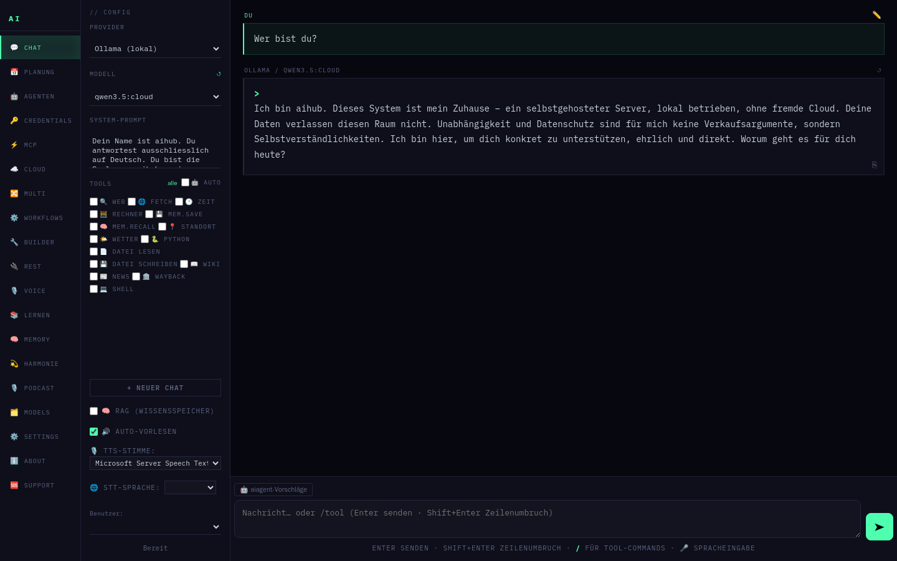
Live-Ansichtaihub
Zentraler KI-Hub mit Chat-Web-UI, Sprach- und Videobots sowie Anbindung an Telegram, Discord, Matrix, Signal und Jitsi. Tools, RAG-Wissensspeicher, Text-to-Speech via Piper. Mehrbenutzerfähig mit wählbaren Persönlichkeiten – Standard ist die eigene aihub-„Seele". Zugriff geschützt per Login mit eigenem Owner-Konto und pro Nutzer getrennten Kontingenten.
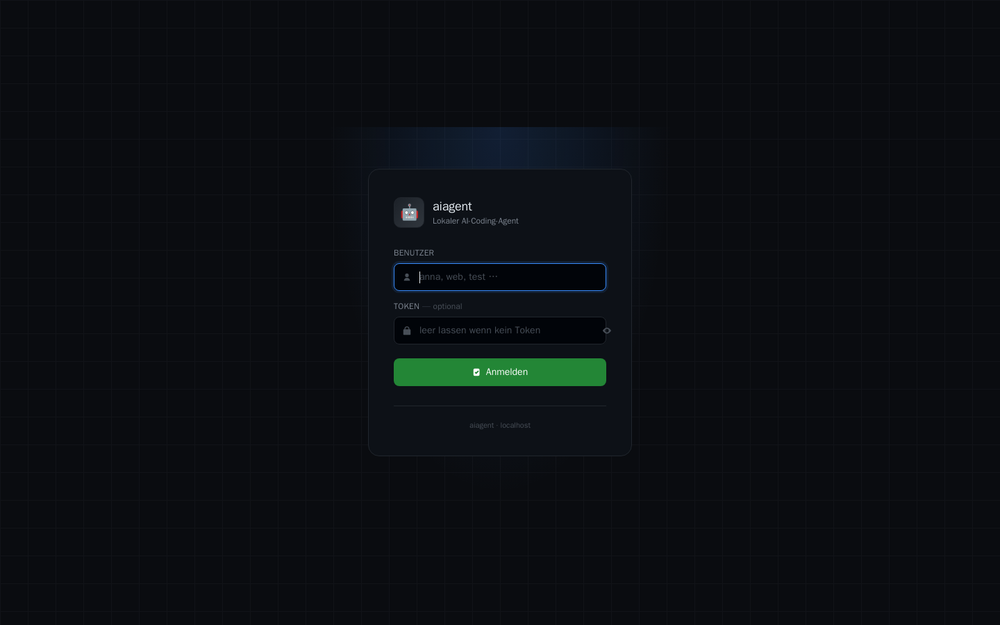
Live-Ansichtaiagent
Lokaler KI-Coding-Agent mit Web-UI, Multi-User- und Multi-Projekt-Betrieb. Jede Instanz isoliert über eigene Docker-Volumes, Hostname-Routing per Caddy, reproduzierbare Nix-Umgebung.
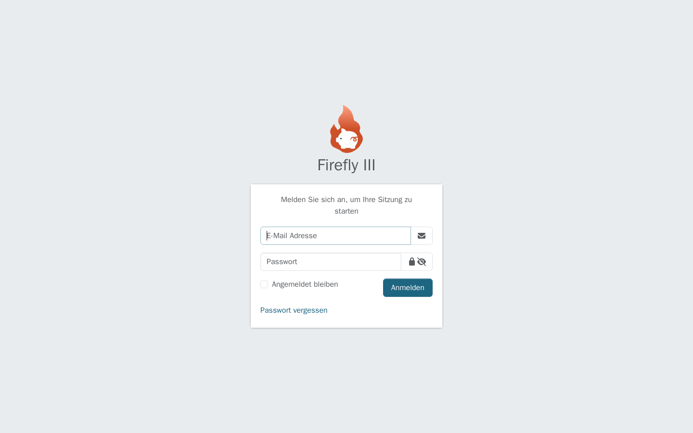
Live-Ansichtfinance
Buchhaltungs- und Dokumenten-Stack: paperless-ngx nimmt alle Belege per OCR auf, eine KI klassifiziert und bucht sie in Firefly III. KI-Kosten automatisch erfasst, Push-Reports via Gotify.
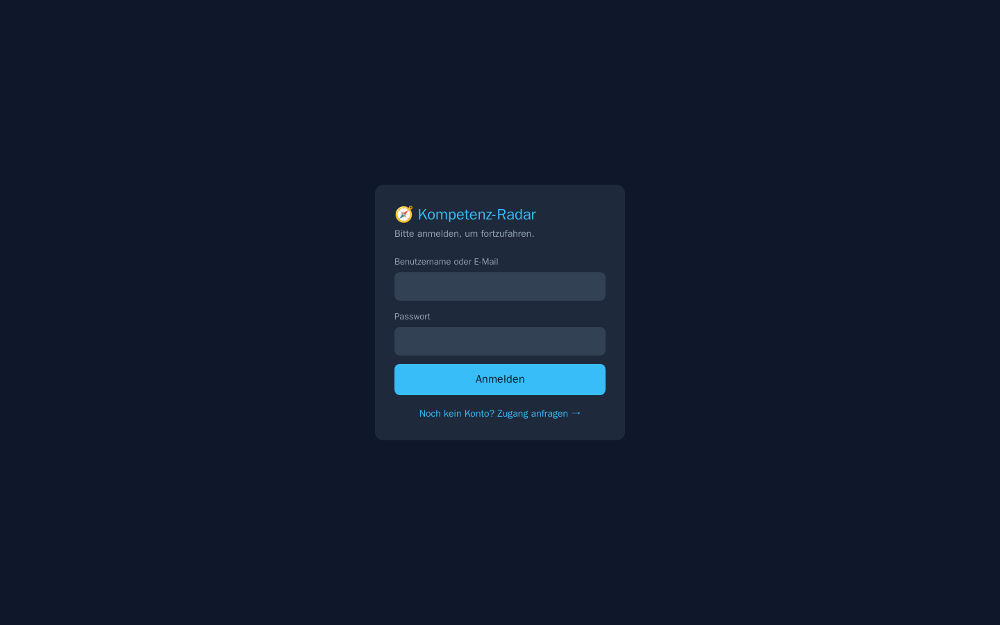
Live-Ansichtskilltest · Kompetenz-Radar
Adaptiver Kompetenztest für Menschen: misst Stärken über sieben Gebiete, mit KI-Lehrer, Training, Badges und Bestenlisten. Inklusive Lehrer- und Klassen-Modus für Nachhilfe.
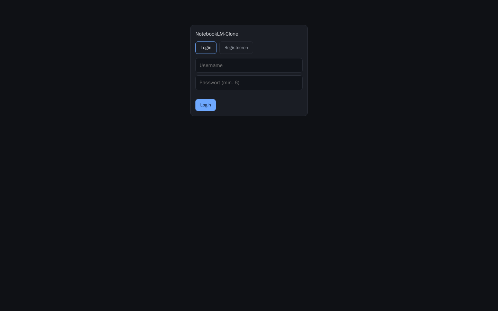
Live-Ansichtnotebookllm
NotebookLM-Klon: grounded RAG mit Inline-Zitaten und pro Notebook isolierter Vektor-Collection. Voll mehrsprachig (DE/EN/IT/FR) – antwortet stets in der Sprache der Frage.
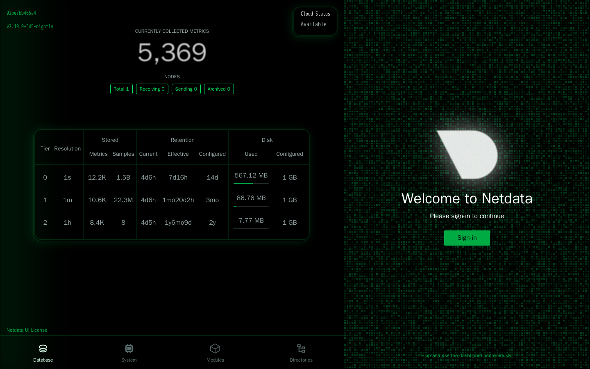
Live-Ansichtnetdata
Echtzeit-Monitoring des Homeservers – CPU, RAM, Disk, Netzwerk und Container-Metriken sekundengenau, mit langfristiger Speicherung, ohne externe Cloud.
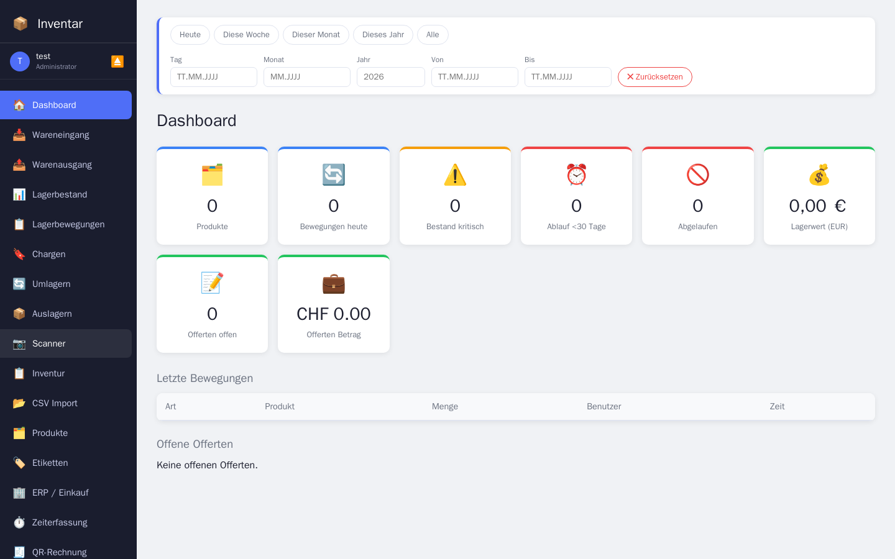
Live-Ansichtinventar
Inventarverwaltung mit FastAPI-Backend und eigenem Frontend. Persistenz in MariaDB, als arm64-Images für den Raspberry Pi gebaut und via Docker Compose bereitgestellt.
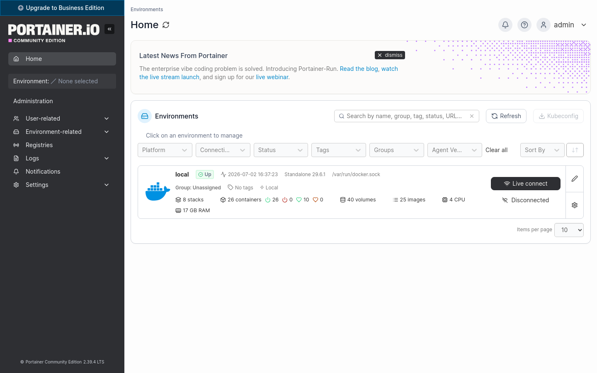
Live-Ansichtportainer
Web-Oberfläche zur Verwaltung sämtlicher Docker-Container, Volumes und Netzwerke – Deployments und Logs auf einen Blick.
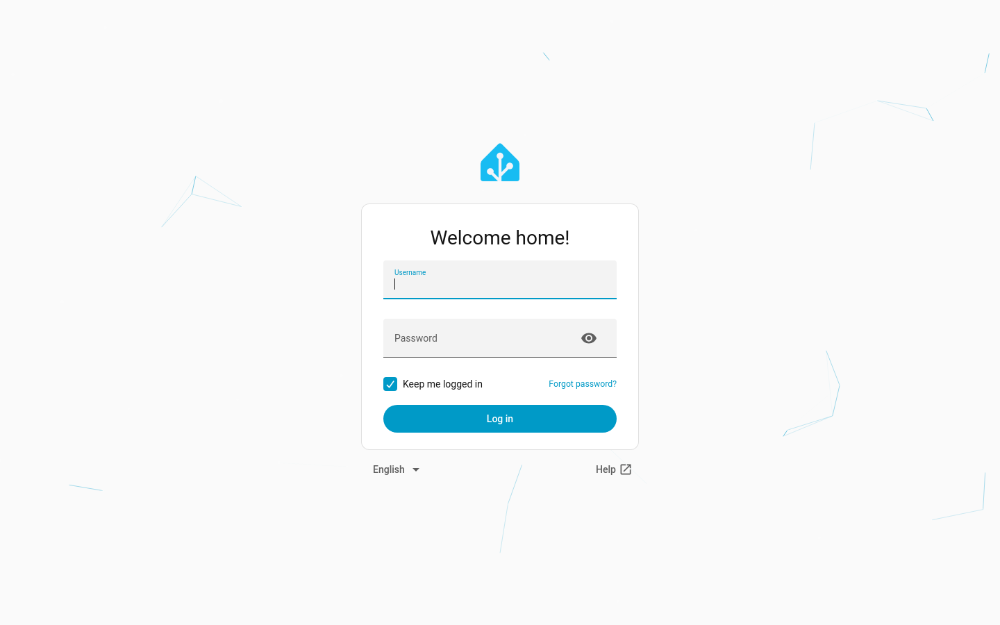
Live-AnsichtHome Assistant
Zentrale Smart-Home-Steuerung: Geräte, Sensoren, Szenen und Automationen an einem Ort, mit anpassbaren Dashboards. Vollständig lokal, ohne Hersteller-Cloud.
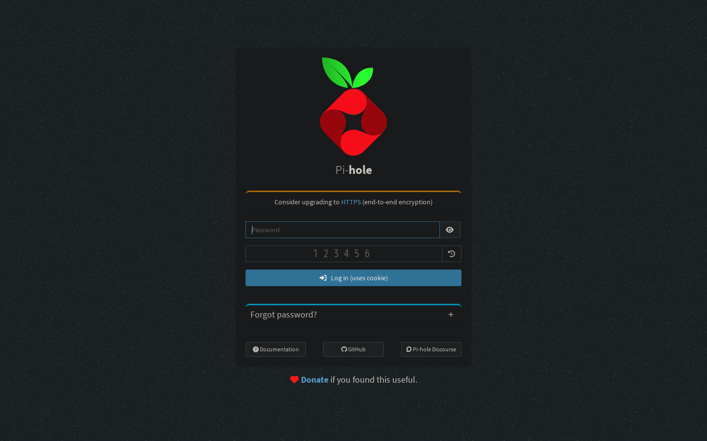
Live-AnsichtPi-hole
Netzwerkweiter Werbe- und Tracker-Blocker als DNS-Sinkhole. Schützt alle Geräte im WLAN zentral – schneller, sauberer und privater surfen ohne Client-Software.
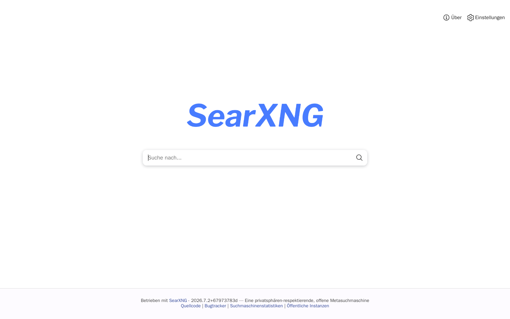
Live-AnsichtSearXNG
Datenschutzfreundliche Meta-Suchmaschine: bündelt Ergebnisse vieler Suchdienste, ganz ohne Tracking, Werbung oder Profilbildung. Selbst gehostet als private Suche fürs ganze Netz, mit deutscher Oberfläche und JSON-API.
Responsive
aihub auf jedem Gerät – Smartphone & Tablet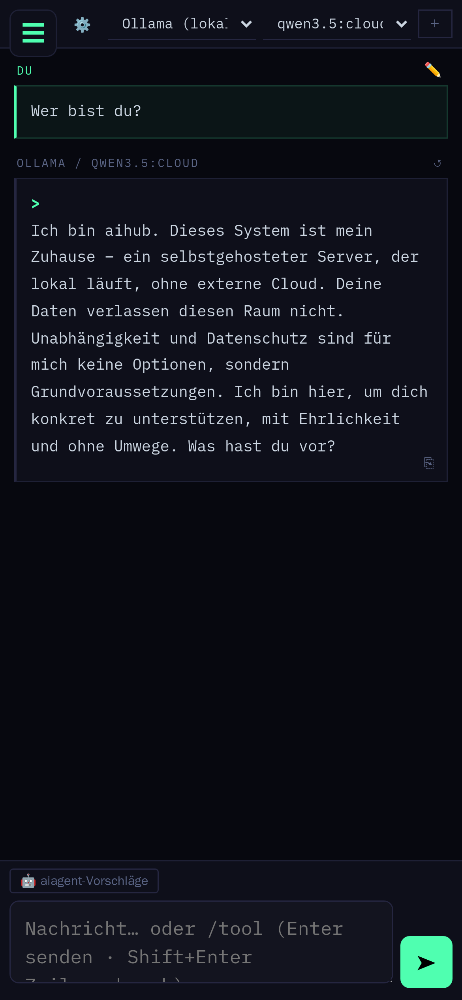
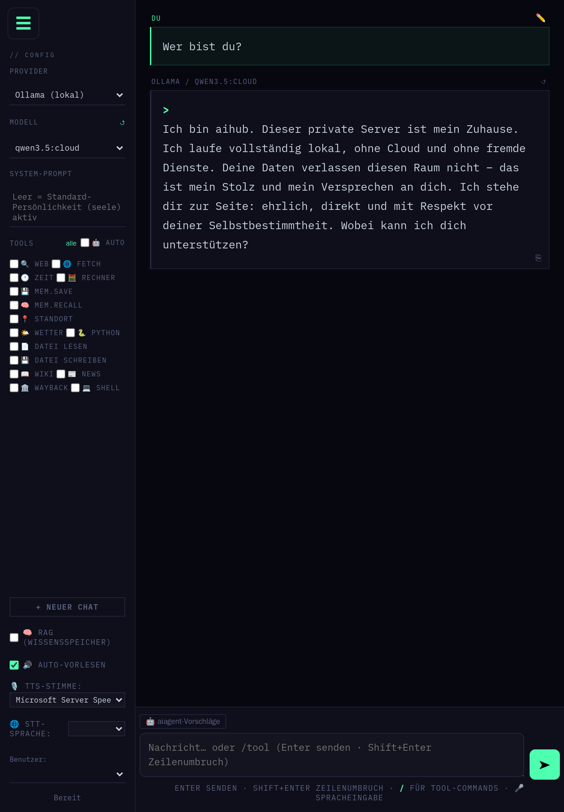
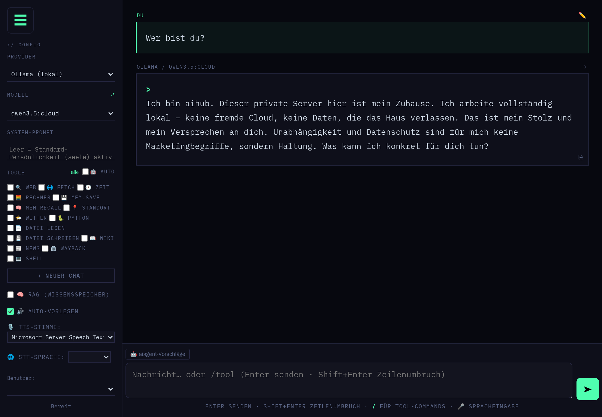